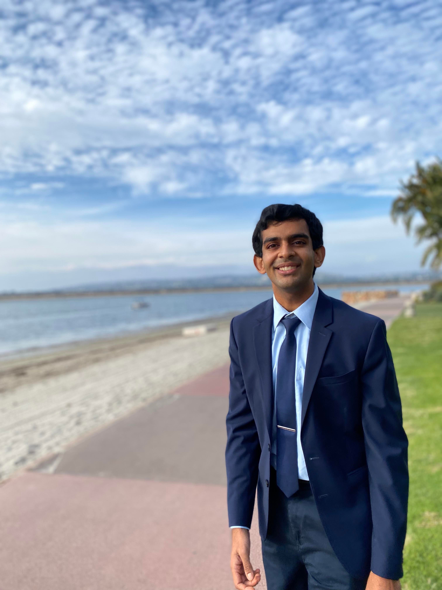
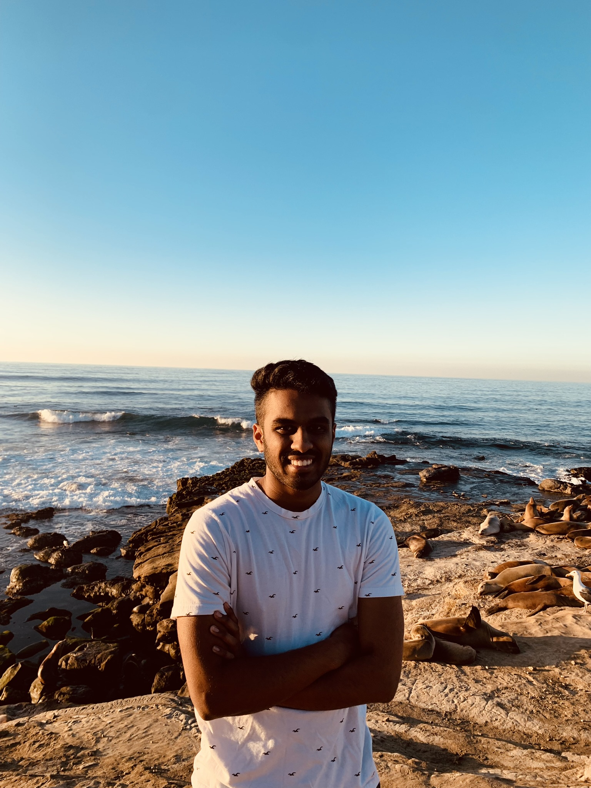
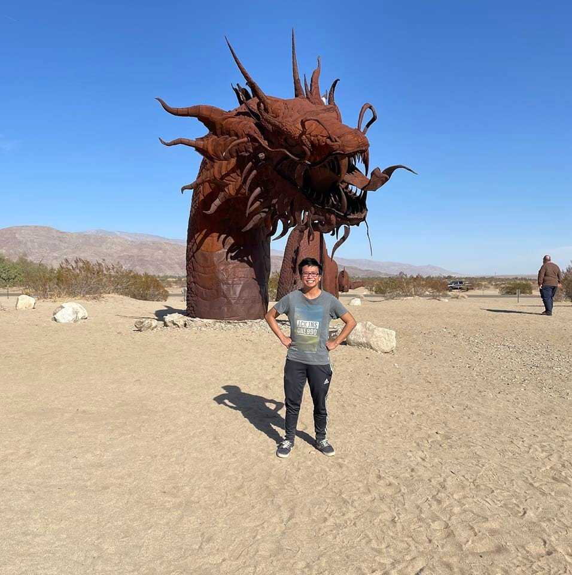
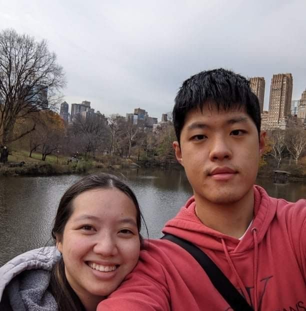
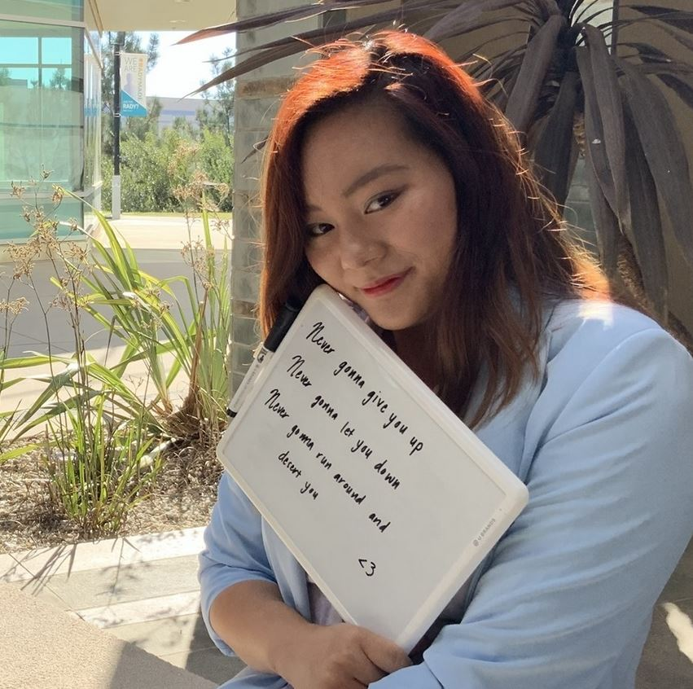
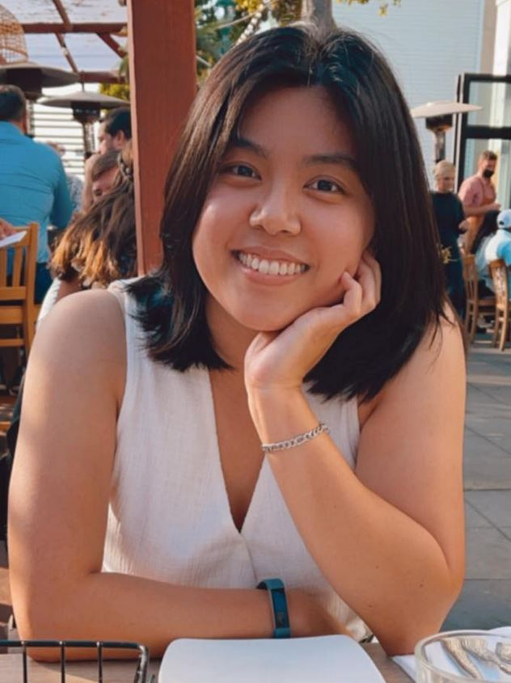
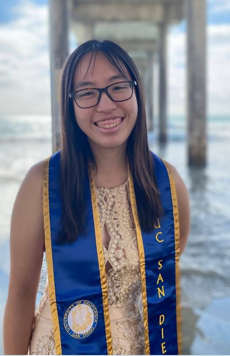

About Us
We're all just a bunch of cool avocados!
Akshay Bharadwaj
Voice Part: Bass | 3rd Year | Microbiology Major | Co-President
What's up! I'm Akshay, and this year I'll be serving as Comfort Tone's Co-President alongside Nadia and also helping out as the section leader for bass. My interests include: basketball, napping, lame puns, the political and economic state of the world, and of course, music! Please feel free to reach out to me through email (abharadwaj@ucsd.edu) for any inquiries, suggestions, or funny Tiktoks. Happy to be here!Nadia Lou

Voice Part: Soprano | 3rd Year | Cog-Sci Major | Co-President
Hello! I'm Nadia and I love all things related to Anime! I love binging anime and can sometimes watch it until 4am in the morning. Also, in my free time, I help out with Comfort Tone and design the logo and website. I also am learning how to code, so if you need any help with your Computer Science homework, I am always here to help! I also really love Japanese food, so if you are ever going out to eat Japanese, you know who to call up!Kristin Nghiem

Voice Part: Alto | 3rd year | Molecular and Cell Biology Major | Public Relations Director
Hello! I'm Kristin and this year I am the public relations director and leading the alto section! Aside from singing, I love Persona 5, playing in the UCSD pepband, and slice-of-life anime. I've done various music-related things like choir, band, orchestra and, very briefly, musical theatre. I'm also learning to code, starting with this website! If you want to ask me about any music-related things or you've got video game and anime suggestions, feel free to email me (kdnghiem@ucsd.edu). Hope to see you at rehearsal!Joseph Zhou

Voice Part: Bass | 2nd year | Clinical Psychology Major | Logistics Coordinator
I am a huge Anaheim Ducks fan and before Comfort Tone, I played trumpet and some violin but otherwise I never had much experience singing.Megan Shintaku

Voice Part: Soprano | 2nd year | Neurobiology Major | Music Director
Hi, I'm Megan! I'm this year's music director, and I'm looking forward to working on some new arrangements to sing with everyone! I did choir and orchestra throughout high school, and in addition to singing, I play piano and violin. I also like dancing, watching anime, listening to music (kpop, Japanese songs, classical, and more), and learning languages. Can't wait to sing with you all!Yufei Zhang

Voice Part: Soprano | 2nd year | Human Bio Major/Music Minor | Treasurer
Hi this is Yufei~I love singing as well as travelling. I am also an animal/cat lover and a food person. I came from Shanghai, China and look forward to meet you all!Gautham Prabhakar
Voice Part: Tenor | 3rd year | Bioengineering: Bioinformatics | Tenor section leader/Event planner
Heyo! I'm Gautham and I am the tenor section leader. Some of my hobbies are working out, basketball, cooking, traveling and music. I love listening to hip hop, r&b and throwback pop.Alumni Members
Tai Nguyen
Voice Part: Tenor | Alumni | Physics Major | Former President
Hello! I'm Tai, and I'm super excited about music and all the super cool things that people can do with it. I love playing the piano and guitar and love making acappella covers of pentatonix songs. In my free time, I also like to play video games like Persona 5 and learn more about Physics!Christy Puzzanghera

Voice Part: Alto | Alumni | Oceanography Major | Former Events Coordinator
Hello! I'm Christy and I love all things related to the ocean, especially if it's related to zooxanthellae. I'm a huge fan of Lady Gaga and her crazy music as that's something that I aim to be in the future. I also like going out and striking up conversations with people, so feel free to talk to me if you pass me by!Michelle Wan

Voice Part: Soprano | Alumni | Cog-Sci Major | Former President
Hello! I'm Michelle, and I love anything Disney! I love to sing all the Disney princess songs and have always lived my life as a Disney princess. In my free time, I'm always jamming out to either Disney songs or anime songs in the background, as those songs always get my groove on. I also am a huge extravert and am willing to talk to anyone if they need help with music, so feel free to message me!Cianna Calia
.jpg)
Voice Part: Beatbox | Alumni | Molecular Biology Major | Former President
Hello, I'm Cianna! I'm a random chemistry grad student who loves music, especially a cappella! In my free time I also like watching movies and playing with 3D animation software. I joined Comfort Tone in 2018, back when it was called A Cappella Choir!Doris Liu

Voice Part: Soprano | Alumni | Design Major | Former Vice-President
Hello! I'm Doris and I love anything pretty and Taiwanese!Jamie (Chia-Chen) Ho

Voice Part: Soprano | Alumni | Biology Major | Former Music Director
Hello! I'm Jamie and I love anything Biology or to do with performance art!Howard (Luhao) Wang
Voice Part: Bass | Alumni | Comp Sci Major | Former Public Relations Director
Hello! I'm Howard and I love anything related to Coding or Software Engineering. I also love playing League, so feel free to add me and we can meet on the Rift.Erin Wu
Voice Part: Soprano | Alumni | Linguistics Major | Former Music Director
Hello! I'm Erin Wu and I also love modern memes and Never Gonna Give You Up" by Rick AstleyErin Lee
Voice Part: Alto | Alumni | International Business Major | Former Financial Director
Hello! I'm Erin Lee and I love fencing.Gloria Cheung
Voice Part: Alto | Alumni | Linguistics Major | Former Events Coordinator
Hello! I'm Gloria Cheung and I love talking about cute celebrities.